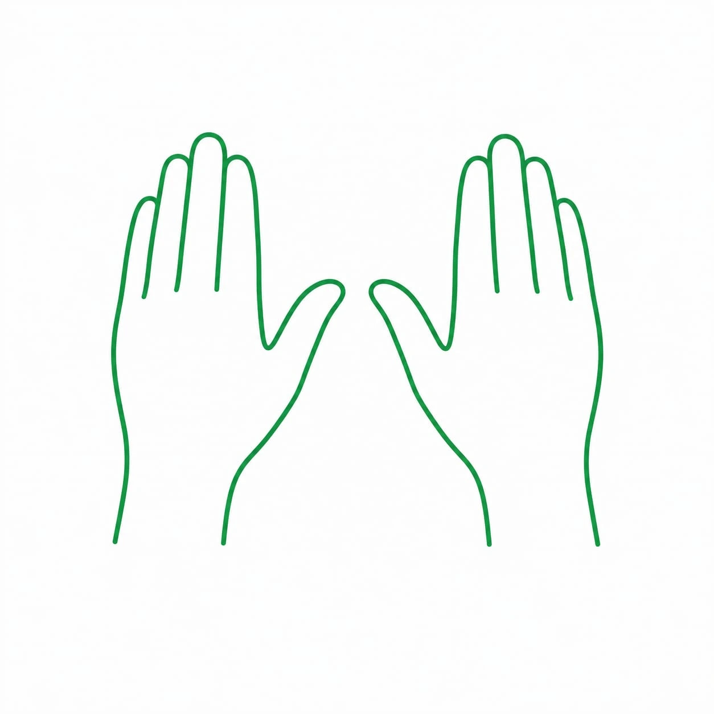

Terapia manualna Gdańsk
Terapia manualna to forma fizjoterapii, w której specjalista wykorzystuje odpowiednio dobrane techniki pracy manualnej, aby oddziaływać na mięśnie, stawy oraz inne struktury układu ruchu. Może być stosowana m.in. w przypadku bólu, ograniczenia ruchomości czy nadmiernego napięcia tkanek.

W naszym Ośrodku Terapii FiLO terapia manualna jest dobierana indywidualnie do potrzeb pacjenta, z uwzględnieniem jego stanu oraz rodzaju występujących dolegliwości.
Terapia manualna Gdańsk – co to jest?
Terapia manualna wykorzystuje wiedzę z zakresu anatomii i biomechaniki do oceny sposobu funkcjonowania poszczególnych części ciała. Podczas terapii fizjoterapeuta może stosować m.in. mobilizacje, manipulacje, techniki tkanek miękkich czy trakcje. Ich odpowiedni dobór pozwala pracować nad zaburzeniami funkcjonalnymi oraz poprawiać współpracę poszczególnych struktur. Ważnym elementem jest także ocena reakcji organizmu na zastosowane techniki, co pozwala na bieżąco dostosowywać sposób prowadzenia terapii. Nigdy nie jest ona realizowana według jednego, sztywnego schematu.
Terapia manualna w Gdańsku – wskazania
Terapia manualna w Gdańsku jest polecana w przypadku różnorodnych dolegliwości. Wskazaniem do jej zastosowania mogą być m.in. bóle mięśni, karku i kręgosłupa, dolegliwości związane z dyskopatią, rwą kulszową czy zmianami przeciążeniowymi. Metoda ta znajduje również zastosowanie przy czynnościowych ograniczeniach ruchomości stawów, bólach pojawiających się po urazach oraz niektórych problemach wynikających z nieprawidłowej postawy ciała. Terapia manualna może być także wykorzystywana w pracy z napięciowymi bólami głowy i tułowia, a w określonych przypadkach również przy zawrotach głowy. O zasadności zastosowania terapii manualnej decyduje fizjoterapeuta po przeprowadzeniu oceny stanu pacjenta i ustaleniu przyczyny występujących dolegliwości.
Terapia manualna w Gdańsku – czy jest bezpieczna?
Terapia manualna w Gdańsku jest uznawana za bezpieczną metodę, jeśli jest wykonywana przez odpowiednio wykwalifikowanego fizjoterapeutę. W naszym Ośrodku Terapii FiLO zabiegi przeprowadzają doświadczeni specjaliści, którzy zwracają uwagę na indywidualne potrzeby oraz możliwości każdej osoby. Należy jednak pamiętać, że podobnie jak w przypadku innych form fizjoterapii, istnieją sytuacje, w których zastosowanie terapii manualnej może być niewskazane. Do przeciwwskazań zalicza się m.in. czynne procesy chorobowe skóry lub tkanek w obszarze poddawanym terapii, w tym zmiany nowotworowe, świeże urazy mechaniczne tkanek, ostre stany zapalne stawów, niektóre zaburzenia ogólnoustrojowe oraz niewydolność krążenia mózgowego. Przed rozpoczęciem terapii warto poinformować fizjoterapeutę o swoim stanie zdrowia i wszystkich istotnych dolegliwościach.
Terapia manualna Gdańsk – dlaczego my?
Wybierając terapię manualną w naszym Ośrodku Terapii FiLO, można liczyć na profesjonalną organizację wizyty oraz komfortowe warunki. Zależy nam na tym, aby pacjent od początku wiedział, czego może się spodziewać. Dbamy o jasną komunikację oraz możliwość zadawania pytań na każdym etapie współpracy. Nasi specjaliści podchodzą do swojej pracy z zaangażowaniem i stale poszerzają wiedzę. Dużą wagę przykładają również do atmosfery podczas wizyty. Chcemy, aby każdy czuł się u nas swobodnie i miał przestrzeń do przedstawienia swoich oczekiwań. Dysponujemy nowoczesnymi gabinetami, wyposażonymi w specjalistyczne sprzęty. Ośrodek został przygotowany tak, aby zapewnić wygodę zarówno podczas terapii, jak i oczekiwania na wizytę. Na miejscu dostępny jest parking, a wejście do budynku znajduje się na poziomie parteru, co ułatwia dotarcie do ośrodka również osobom, dla których pokonywanie schodów stanowi trudność. Do dyspozycji pacjentów jest też przyjazna poczekalnia, w której można skorzystać z bezpłatnej kawy i herbaty. Gwarantujemy również wygodne umawianie wizyt. Wystarczy skontaktować się z nami telefonicznie lub poprzez formularz dostępny na stronie, aby ustalić dogodny termin oraz uzyskać odpowiedzi na pytania dotyczące terapii.
Potrzebujesz pomocy?
Nie wiesz, która metoda będzie odpowiednia dla Ciebie lub Twojego dziecka? Skonsultuj się z naszym zespołem i dobierz indywidualny plan terapii.
Umów wizytęObszary Metod
Terapie w Gdańsku
Specjalista ds. Fizjoterapii

mgr Olga Długozima
Fizjoterapia DorosłychNajczęściej zadawane pytania
Jak wygląda pierwsza wizyta, od której zaczyna się terapia
manualna w Gdańsku?
+
Pierwsza wizyta trwa 45 minut i łączy diagnostykę z terapią. Fizjoterapeuta pyta o dolegliwości: od kiedy się pojawiają, w jakich sytuacjach się nasilają i co przynosi ulgę. Potem bada ruchomość stawów, napięcie tkanek i postawę. Jeśli nie ma przeciwwskazań, terapia manualna w Gdańsku zaczyna się już na tym samym spotkaniu, więc pacjent nie wychodzi z samą diagnozą. Pierwsza wizyta z diagnostyką kosztuje 200 zł, tyle samo każda kolejna. W Ośrodku FiLO pracujemy według koncepcji terapii manualnej szkoły niemieckiej, a terapię prowadzi mgr Olga Długozima.
Czy terapia manualna w Gdańsku boli?
+
Większość technik terapii manualnej nie boli. Przy pracy na mocno napiętych mięśniach albo w bolesnych miejscach może się pojawić chwilowy dyskomfort, ale zawsze można powiedzieć o tym fizjoterapeucie, a on dostosuje siłę i rodzaj techniki. Czasem przy mobilizacji stawu słychać charakterystyczne „strzyknięcie”. To naturalne zjawisko i nie oznacza, że coś zostało uszkodzone. Przez dzień albo dwa po wizycie leczony obszar może być lekko tkliwy, podobnie jak po intensywnym wysiłku.
Ile wizyt obejmuje terapia manualna w Gdańsku i czy wystarczy
sama praca fizjoterapeuty?
+
Liczba wizyt zależy od przyczyny dolegliwości, od tego, jak długo trwają, i od reakcji organizmu na terapię. Fizjoterapeuta ocenia efekt po każdym spotkaniu i na tej podstawie planuje kolejne. Gdy problem wynika z przeciążeń albo z nawyków ruchowych, sama terapia manualna w Gdańsku zwykle nie utrzyma efektu na długo. Dlatego łączymy ją z treningiem funkcjonalnym, czyli indywidualnie dobranymi ćwiczeniami, które pacjent wykonuje także w domu. Jeśli trzeba, do terapii dochodzi kinesiotaping (przy wizycie terapeutycznej bez dodatkowej opłaty) albo suche igłowanie.